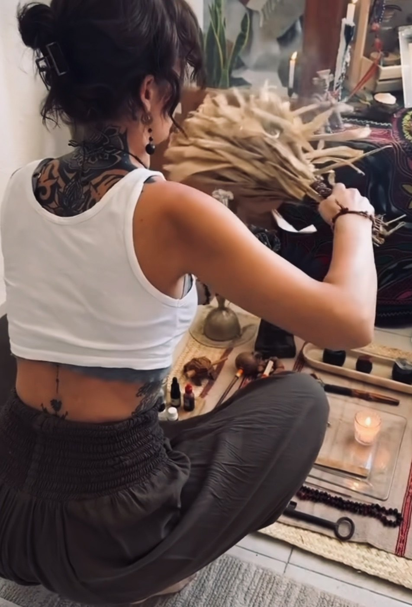

My Approach
How I hold this work
The way we enter a healing space matters. My work is grounded in relationship—with ourselves, with one another, and with the traditions and teachings that inform these practices.
I aim to create a space where people feel welcomed, respected, and able to show up as they are. This requires compassion, clear communication, thoughtful boundaries, and a willingness to acknowledge what I can and cannot offer.
I approach somatic practices and ancestral medicines with humility and respect for the trust placed in me. Sharing these practices carries responsibilities that extend beyond the individual experience, including honoring their origins, understanding their risks, and recognizing when a particular approach may not be appropriate.
The Principles I Bring to This Work
Freedom of Choice
Your experience belongs to you. You may ask questions, express your needs, pause, or stop at any point. There is no expectation to push beyond your limits or continue with something that does not feel right.
Informed Consent
Before we begin, I will explain what a practice involves, discuss relevant risks, and make space for your questions so you can make an informed decision about participating.
Clear Communication
I value openness and encourage you to share your questions, concerns, and boundaries. Honest communication helps us understand your needs, clarify expectations, and navigate any concerns that arise.
Reverence for Ancestral Traditions
The medicines and practices I share are connected to living traditions, communities, and generations of knowledge keepers. I strive to honor their origins, acknowledge the people who have preserved them, and approach these teachings with humility.
Readiness and Suitability
Not every practice is right for every person or every moment. I believe discernment is part of responsible care, and sometimes the most appropriate choice is to pause, explore another approach, or not proceed.
Honesty and Humility
I do not promise specific outcomes or assume that I know what your experience means. My role is to offer thoughtful guidance and attentive presence while respecting your individual experience and the limits of what I can offer.
Before We Begin
Every offering begins with a complimentary 30-minute discovery call. This is an opportunity to discuss what brings you here, ask questions, and explore whether my offerings may be appropriate for your needs and intentions.
You do not need to arrive with a clear intention or have everything figured out. We can begin with what feels most relevant to you.
Somatic sessions and Kambo require an intake form. Kambo also involves specific health screening and preparation guidance before proceeding. For couples, each partner has an individual discovery call, allowing both people to share their perspectives and decide independently whether participating feels appropriate.
Discernment and Care
Responsible practice means recognizing that there are times to move forward and times to slow down, change direction, or decline an offering.
If I have concerns about your health, safety, or circumstances, I may recommend postponing a session or ceremony, exploring another approach, or declining to offer a particular medicine. When possible, I will explain my concerns and discuss alternatives.
These decisions are not judgments about you. They are part of my responsibility to the people I work with and to the medicines I carry. Protecting well-being matters more than completing a ceremony or following a plan.
Understanding Health and Safety
Different practices carry different considerations and risks. Kambo, in particular, can cause serious complications and may be unsafe for people with certain health conditions or circumstances.
Sharing relevant health information, medications, and concerns openly is essential to assessing suitability. Preparation and screening support informed decision-making, but they cannot eliminate every risk or guarantee safety. If you have concerns about whether a practice is appropriate for you, consult a qualified healthcare professional.
My offerings do not replace medical or mental health care, and I do not diagnose or treat medical conditions. I encourage you to continue working with qualified healthcare providers and not to stop or change prescribed medications or treatments based on participation in these practices.
You deserve honest information about both the possibilities and the limitations of each practice before deciding whether to participate.
Integration and Reflection
The meaning of an experience may emerge gradually through rest, reflection, conversation, and the rhythms of daily life. There is no particular insight you need to reach, no timeline to follow, and no expected transformation.
After a ceremony, I will send a follow-up message and offer the option of a phone conversation if you would like additional support. My role is not to interpret your experience for you, but to make space for your own reflections and questions as you find your way forward.
An Open Invitation
If something in this work resonates with you, or you feel curious and would like to learn more, you are welcome to reach out. You don’t need to have everything figured out or know exactly where to begin. Questions, uncertainty, and thoughtful conversations all have a place here.
Our initial conversation is an opportunity to explore whether my offerings align with your needs and intentions. There is no pressure to commit—just space to ask questions, consider your options, and decide what feels right for you.
If you feel ready to take the next step, I invite you to schedule a complimentary discovery call. We can talk about what brings you here, explore which offering may be appropriate, and see whether working together feels like a good fit.
You are welcome here, just as you are, and I look forward to meeting you wherever you are on your journey.
